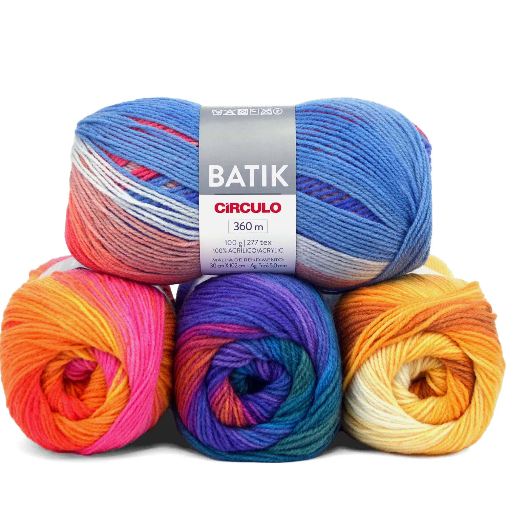

Fios 100% Naturais
A Base Perfeita
para suas
Criações em Lã.
Descubra nossa coleção premium de lãs macias, duráveis e com cores vibrantes. O toque perfeito e o rendimento ideal para transformar o seu artesanato.
Lã Batik

Fio Batik Círculo 100g
360m
Disponível